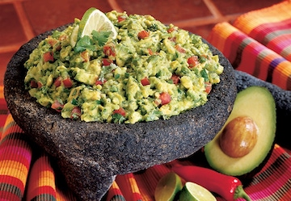

Recipe for Guacamole

Description
This is the BEST guacamole recipe as it’s simple to make and uses fresh, high quality ingredients. Authentic guacamole doesn’t contain fillers and unnecessary ingredients. All you need is avocados, onion, tomatoes, cilantro, jalapeno pepper, lime juice, garlic and salt. Easy and delicious!
Ingredients
- 3 avocados - peeled, pitted, and mashed
- 1 lime, juiced
- 1 teaspoon salt
- ½ cup diced onion
- 3 tablespoons chopped fresh cilantro
- 2 roma (plum) tomatoes, diced
- 1 teaspoon minced garlic
- 1 pinch ground cayenne pepper (Optional)
Steps
- In a medium bowl, mash together the avocados, lime juice, and salt. Mix in onion, cilantro, tomatoes, and garlic. Stir in cayenne pepper. Refrigerate 1 hour for best flavor, or serve immediately.